Version 1.0.7, for KNIME 4.1 and later, and KNIME 5 in the classic user interface. Server Explorer is a third-party plugin, not a KNIME product. To install or update it, see the install guide.
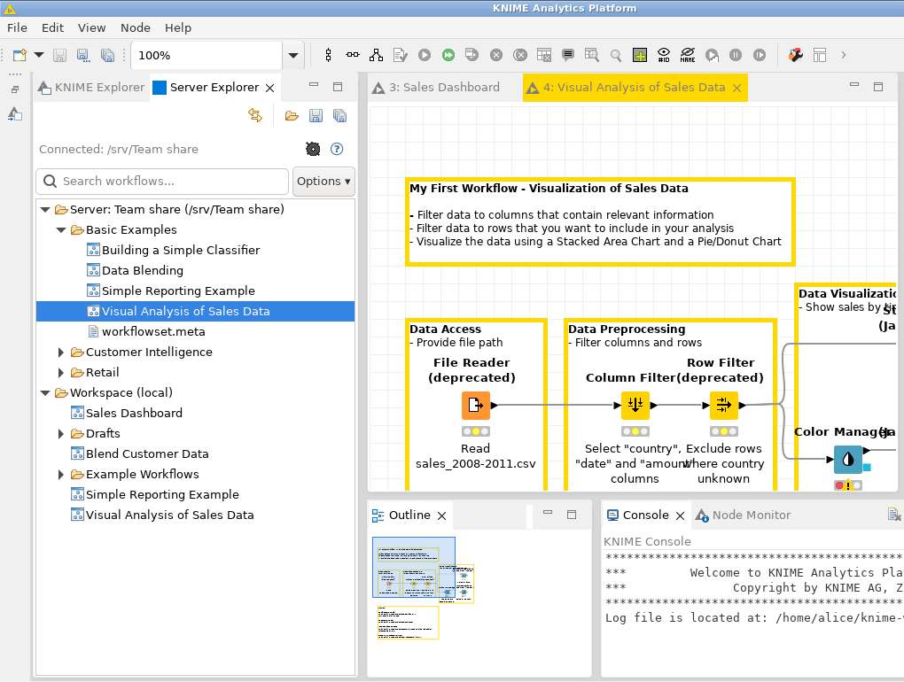
Server Explorer lets a team keep KNIME workflows in one shared place. The tab shows two lists, one above the other:
To share a workflow, drag it from your workspace up to the server. To use someone else's, drag it down, or just double-click it.
Server Explorer is a tab next to KNIME Explorer, at the top left of the KNIME window. Click it to bring it to the front.
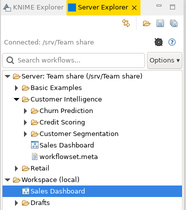
| Part | What it does |
|---|---|
| Buttons, top row | From left: Refresh, New Folder, Upload to Server, Download to Workspace. |
| Status line | Whether the server can be reached. See below. |
| Gear | Opens the server settings (section 3). |
| Question mark | Opens this guide. |
| Search box, Options | Narrows the tree to matching names (section 9). |
| Server: name (address) | The shared workflows. |
| Workspace (local) | Your own workflows. |
In the tree, a folder icon is a folder, the small diagram icon is a workflow, and a page icon is any other file. Right-click anything for its menu. Double-clicking a folder opens or closes it.
| Status line | Meaning |
|---|---|
| Connected: address | All is well. |
| Offline: address (workspace browsing only) | The server can't be reached right now. Your workspace still works. See section 13. |
| No server configured — click ⚙ to add one | Add a server (section 3). |
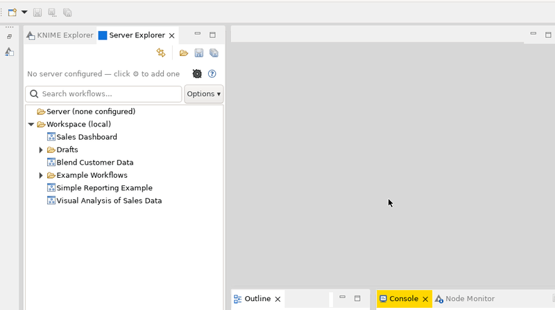
You need the server's address, or the path to the shared folder. Ask whoever set it up.
https:// or http://, for example https://workflows.example.com.S:\KNIME workflows, \\fileserver\team\knime or /mnt/team/knime. It can be any folder you can open, including a network drive.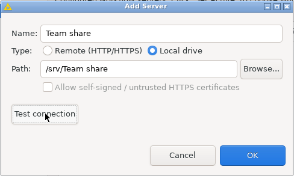
Allow self-signed / untrusted HTTPS certificates is only for an https:// server whose certificate KNIME doesn't trust, which is common for servers inside an organization. Turn it on only if the person who runs the server tells you to, or if Test connection says the certificate couldn't be validated and you know the server is the right one.
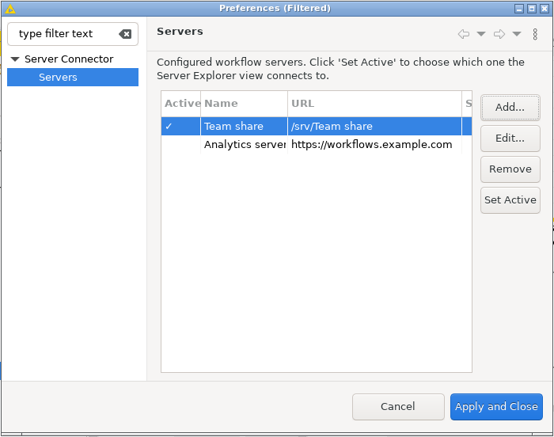
The tab shows one server at a time, the one with the tick in the Active column. The first server you add becomes active. To switch, select another one, click Set Active, then Apply and Close. Edit... and Remove change the list. Nothing changes until you click Apply and Close.
Double-click a workflow, or right-click it and choose Open Workflow.
If KNIME reports errors while loading, the workflow probably uses nodes from an extension you don't have. That message comes from KNIME, not from Server Explorer.
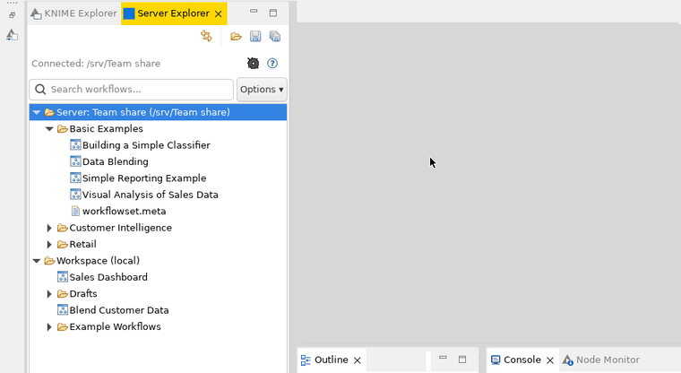
There are two ways:
Downloads always go to the top level of your workspace, even if you drop onto a folder there. To put one in a folder, drag it there afterwards. A folder comes with everything inside it. KNIME Explorer shows the download too.

Uploads and downloads run in the background, with a progress window you can cancel. A message says when each one is done. To stop seeing these messages, tick Don't show this again.
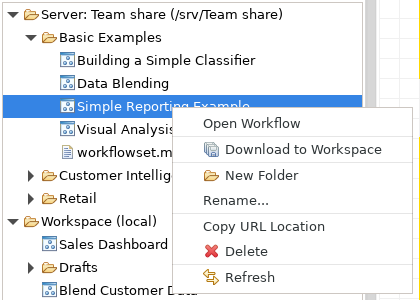
These work the same way on both branches. Right-click an item to see them.
/ or \.Close a workflow in KNIME before renaming, moving or deleting it.
Right-click › Copy URL Location puts the item's address on the clipboard, ready to paste. Select several to get one address per line.
| Item | Address |
|---|---|
| In your workspace | knime://LOCAL/Folder/Workflow. KNIME's reader and writer nodes accept this. |
| On a Local drive server | A file: address of the folder |
| On a Remote server | The server's download address for it |
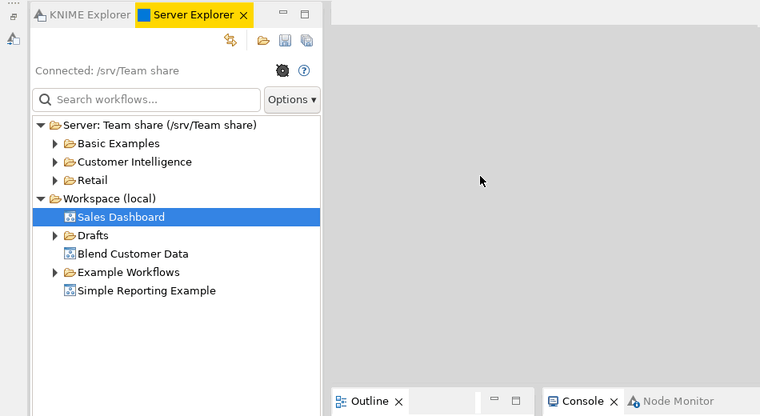
Type in Search workflows... and both branches narrow to the items whose names contain what you typed, with the folders they're in opened. Capitals don't matter. Click the × in the box to clear it, and the tree goes back to how it was.
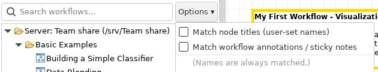
Options can also look inside workflows, at the names you've given nodes and at the notes on the canvas. These searches read every workflow, so results take longer, especially on a big server.
The Server branch checks for changes by itself: every 10 seconds while the tab is in use, and every minute otherwise. Your workspace updates when you come back to the tab, and when items are added or removed at its top level. To update straight away, click Refresh. A refresh closes the server's folders.
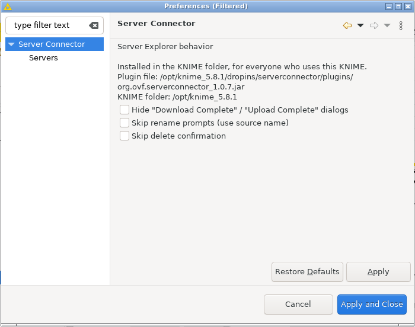
File › Preferences › Server Connector:
The page also says who has the plugin and which file it was loaded from, which helps when asking for support. These settings, like the server list, belong to the workspace.
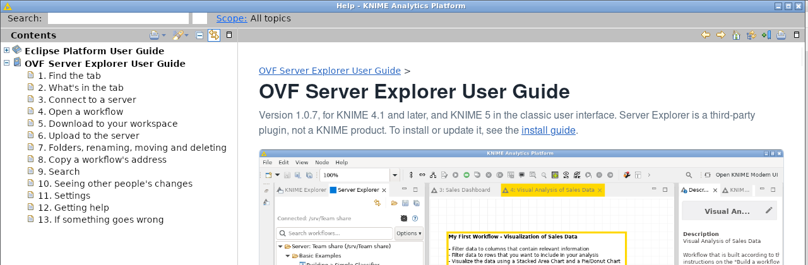
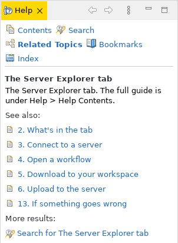
| What you see | What to do |
|---|---|
| Offline: address | Check your network or VPN. On the Servers page, select the server, click Edit... and Test connection: it usually says why. |
| Test connection: not speaking TLS on that port | Try the address with http:// instead of https://. |
| Test connection: TLS certificate could not be validated | See the note on self-signed certificates in section 3. |
| Test connection: nothing is listening, could not be resolved or timed out | The address is wrong, the server is down, or a firewall or VPN is in the way. Check the address with whoever runs the server. |
| A line starting Error: under the server | The server or folder couldn't be read. For a Local drive, check that you can open the folder outside KNIME. |
| is not a workflow (no workflow.knime found) | That item is a folder, not a workflow. |
| Could not open workflow | Open it from KNIME Explorer instead. |
| The server list is empty | You're probably in a different workspace. Add the servers again (section 3). |
| A drag does nothing | Drags work within this tab only, not to or from KNIME Explorer. All dragged items must come from the same branch, and an item can't be dropped onto itself. |
| No Server Explorer tab | See section 1. If it's not under View either, the plugin isn't installed in this KNIME: see the install guide. |
| A red tab, Server Explorer (needs OVF plugin) | This KNIME doesn't have the plugin, but the workspace was used with one that does. Close the tab, or use the KNIME that has the plugin. Nothing is lost. |